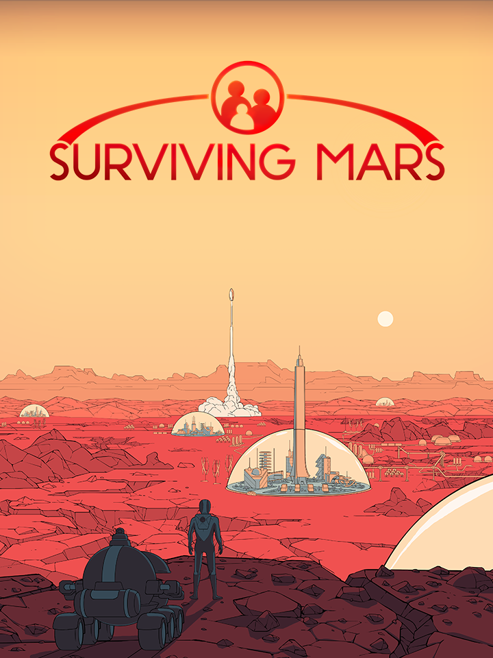

Surviving Mars
Details
|  | |
| Spielzeit | 32m 0s |
| Letzte Aktivität | 04.06.2020 16:21:02 |
| Hinzugefügt | 19.12.2019 |
| Modifiziert | 10.11.2022 13:03:44 |
| Fertigstellungsstatus | Gespielt |
| Bibliothek | Steam |
| Quelle | Steam |
| Plattform | PC (Windows) |
| Veröffentlichungsdatum | 15.03.2018 |
| Community Bewertungen | 70 |
| Kritiker Punkte | 76 |
| Benutzerwertung | |
| Genre | Simulation |
| Entwickler | Haemimont Games |
| Verleger | Paradox Interactive |
| Eigenschaft | Achievements Cloud Saves Controller Support Single Player Steam Karten Workshop |
| Links | Communityhub Diskussionen Neuigkeiten Shopseite PCGamingWiki Errungenschaften Workshop |
| Tag | |
Beschreibung
Featured DLC
https://store.steampowered.com/app/952890/Surviving_Mars_Green_Planet/
Special Editions

Free Updates

About the Game
Colonize Mars and discover her secrets, with minimal casualties.
Welcome Home! The time has come to stake your claim on the Red Planet and build the first functioning human colonies on Mars! All you need are supplies, oxygen, decades of training, experience with sandstorms, and a can-do attitude to discover the purpose of those weird black cubes that appeared out of nowhere. With a bit of sprucing up, this place is going to be awesome!
Surviving Mars is a sci-fi city builder all about colonizing Mars and surviving the process. Choose a space agency for resources and financial support before determining a location for your colony. Build domes and infrastructure, research new possibilities and utilize drones to unlock more elaborate ways to shape and expand your settlement. Cultivate your own food, mine minerals or just relax by the bar after a hard day’s work. Most important of all, though, is keeping your colonists alive. Not an easy task on a strange new planet.
There will be challenges to overcome. Execute your strategy and improve your colony’s chances of survival while unlocking the mysteries of this alien world. Are you ready? Mars is waiting for you.
Main Features:

Building on a planet not fit for human life challenges you to build a smart, functional colony. Bad planning isn’t about traffic jams, it’s about survival of your colonists. You really don’t want rolling blackouts in a city constructed in a place without oxygen.

Each colonist is a unique individual with problems and strengths that influence the needs and behavior of the other colonists. Things can get really interesting if your chief scientists develops alcoholism after one too many long nights in the lab.

Retro-futuristic super structures housing colonists, factories and commercial buildings with their own “neighborhood personality.” Create colonies that value science over everything else, while tired workers drink their pay away at a local bar, or attempt a utopia among the stars.

Inspired by the classic sci-fi of Asimov and Clarke, Surviving Mars holds many secrets. During each playthrough players may encounter one of Mars’ individually crafted mysteries. Uncovering these secrets might bring your colony great fortune, or terrible ruin. What is that sphere that manifested itself outside colony HUB B, and is it friendly?

Combine static and random research through experimentation, which allows for a different experience for each journey through the game. Attain new scientific breakthroughs by exploring the uncharted terrain of Mars's surface.

A sleek, modern take on the bright futurism of the 1960s. A time of exploration and adventure.

Craft your own fantastic buildings, parks or even a mystery to share through Surviving Mars’s extensive and convenient modding tools. Share your finest creations with the community to build the perfect society.